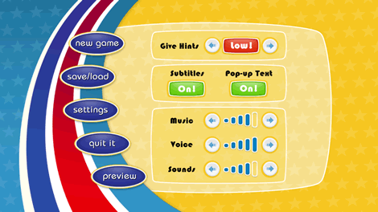

Selecteer "StrongBadia the Free" in het Wii-menu. Het kanaalcherm wordt geladen. Richt de aanwijzer op Start en druk op  om de aflevering te starten. Het hoofdmenu verschijnt.
om de aflevering te starten. Het hoofdmenu verschijnt.
In het hoofdmenu vind je de volgende opties:
- New Game: Start het spel vanaf het begin of speel de tutorial.
- Save/Load: Sla een lopend spel op of open een opgeslagen spel.
- Settings: Verander het hintniveau, zet de ondertiteling aan/uit, pop-uptekst en pas de geluidsinstellingen aan.
- Quit It: Verlaat het spel en keer terug naar het Wii-menu.
- Preview: Bekijk een voorvertoning van de volgende aflevering van Strong Bad's Cool Game for Attractive People.
Wijs naar de overeenkomstige titel en druk op
om een van deze opties te selecteren.
Wijs naar New Game en druk op . Je kunt de aflevering starten of de tutorial spelen. Als je dit type spel nog niet kent of wilt weten hoe de besturing werkt, begin dan met de tutorial.
Wijs naar Save/Load en druk op . Je hebt drie slots om in op te slaan. Op bepaalde momenten wordt het spel automatisch opgeslagen. De eerder opgeslagen versie wordt dan overschreven, dus als je later verschillende delen van het spel nog eens wilt spelen, sla die dan op in een van de andere slots.
Wijs naar Save naast een van de slots en druk op om het spel op te slaan. Wijs naar Load naast de juiste slot en druk op om een opgeslagen spel te laden.

Wijs naar Settings en druk op . In dit scherm kun je de spelinstellingen aanpassen. Wijs naar de knoppen op het scherm en druk op om deze instellingen aan te passen. Dit zijn je opties:
- Give Hints: Stelt het hintniveau in. Als je dan niet verder komt in het spel, krijg je vanzelf een voorzichtig duwtje in de juiste richting.
- Subtitles: Zet de ondertiteling aan/uit die verschijnt als de personages aan het praten zijn.
- Pop-up Text: Zet de tekst aan/uit die verschijnt als je de aanwijzer over een voorwerp beweegt waarmee Strong Bad iets kan doen. (Zelfs als de pop-uptekst is uitgeschakeld, zal de aanwijzer reageren als je hem beweegt over iets wat gebruikt kan worden.)
- Music: Regelt het volume van de achtergrondmuziek.
- Voice: Regelt het volume van de gesproken dialogen.
- Sounds: Regelt het volume van de geluidseffecten van het spel (zoals voetstappen).
Wijs naar Quit It en druk op . Via dit scherm kun je het spel afsluiten. Je kunt vanaf hier naar het hoofdmenu of het Wii-menu.
Wijs naar Preview en druk op om een voorvertoning te bekijken van de volgende aflevering van Strong Bad's Cool Game for Attractive People.